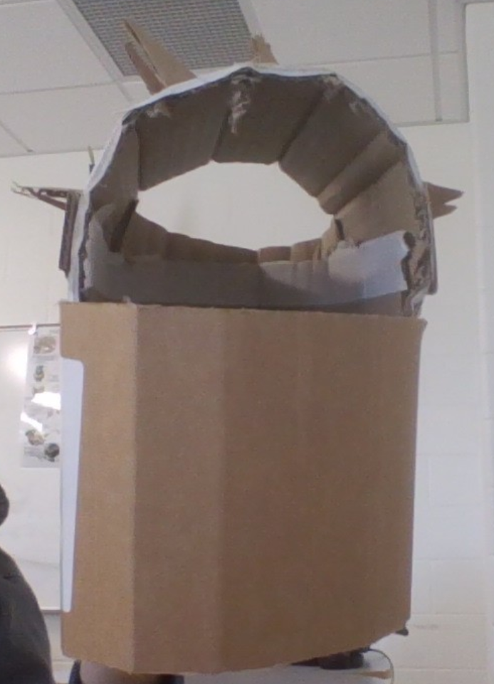
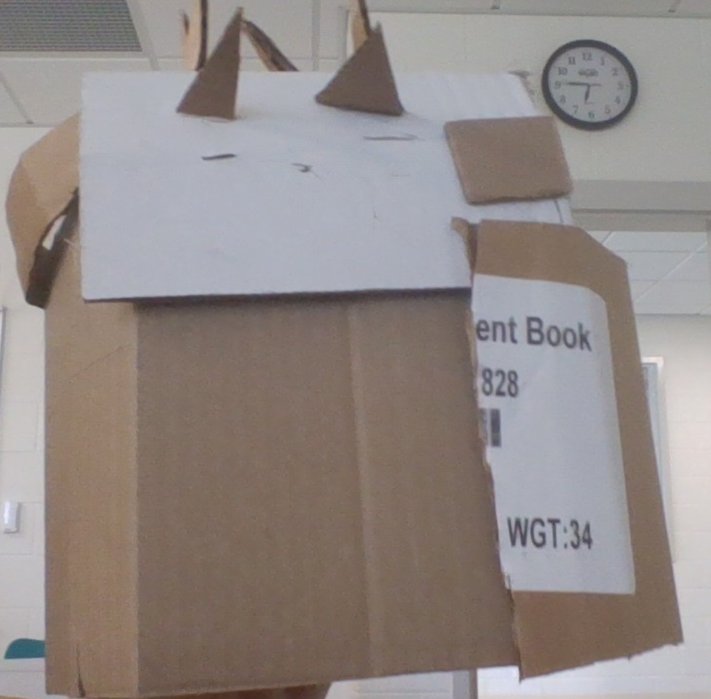
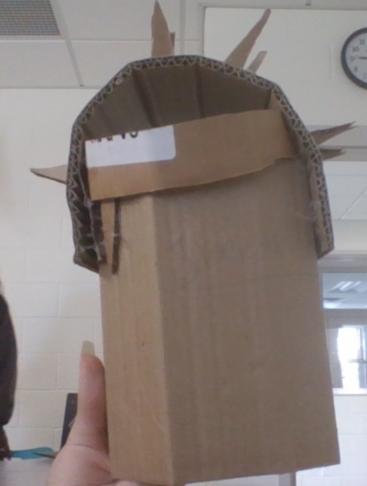

Lesser hedgehog EDPL
EDPL
This project is about assisting in natural disaster situations. This prototype is for assisting in situations
where head injuries are commonly caused by blunt trauma from falling or debris.
By taking inspiration from the lesser hedgehog tenrec we designed a helmet for lessening or preventing blunt head injuries
Background information
5 fact about earthquakes
-
largest recorded earthquake was a 9.5 magnitude
in 1960 at Chile
-
Earthquakes on the moon can happen although are
much weaker than earthquakes here
-
The first seismoscope was made in 1751.
-
Before electronic rcordings of earthquakes
scientists used pendulum seismometers to attempt
to record motion created by earthquakes, the
largest pendulum seismometer weighed 15 tons.
-
The earliest reported earthquake was in 1769 in
California at Gaspar de Portola.
3 facts about the lesser hedgehog spines
-
These spines are modified hairs and can be found
all around on their body except the head,
underbelly, and feet.
-
These spines serve mostly to protect the tenrec
and have no role in mating.
-
Like other hedgehogs tenrecs will roll into a ball
when threatened and leave their spines to do the
rest of the work.
Healthcare questions
-
How does the prototype solve
the identified problem that support personnel
have to help people affected by the disaster? RB answered
Our prototype solves the problem of unprotected
head injuries or broken hands from head coverage
by introducing a shock absorbant helmet to
lessen the amount of people who need to be
treated for head related injuries allowing
personell to be much more efficient with helping
-
How well does the prototype
relate to the organism's
biological design? SP answered
It uses the quills from the lesser hedgehog as
a sort of absorbant for shock by giving more
surface area for the shock to spread throughout.
-
How will the prototype be incorporated into use? RB answered
It will be distributed amongst civilians
for the use cases of debris related disasters
and sold as such to aid or prevent head
injuries. No training will be required
to use or distribute it as it's as simple
as giving a jacket to someone.
-
How feasible or easy will it be to
manufacture, distribute, and use the prototype? SP answered
The prototype will be feasible to manufacture
and distribute (as a survival tool for natural
disasters) and using the prototype will be easy
as all you need to do is to put it on around
your head.
-
Will the prototype solve a
major or minor problem related to the
effects of the natural disaster on people? SP answered
The prototype will solve a major problem
related to brain trauma and skull fractures
commonly caused in floods, earthquakes, and
tornados / hurricanes where people either fall
and hit their head on something or the harm
comes to them. This prototype is designed
to prevent those injuries by absorbing shock
with its quills and general material.
- How much improvement will
the prototype effect in helping people? RB answered
This prototype will have a major improvement
in floods and earthquakes where injuries
related to falling and head injuries are
common. Imagine you're in a flood where water
knocks you off your feet and you fracture
your skull on the floor, having a helmet
issued to people for use during natural
disasters will greatly limit or outright remove
certain head injuries relating to blunt trauma.
-
How does the prototype support healthcare
workers or emergency responders in delivering
care more efficiently during the disaster? AM answered
By giving this prototype to civilians, emergency
responders have eliminated certain blunt trauma
related injuries related to the head and brain
damage. Leading to healthcare workers and
emergency responders being able to help more
people by giving them less people who are
already near dead with a concussion or a
fractured skull/
-
In what ways does the prototype help overcome
barriers such as limited access to clean water,
electricity, or medical supplies in disaster zones? AM answered
Our prototype is designed to overcome the
injuries brought by falling debris or sudden
jolts or falls by designing a helmet covered in
spikes to absorb shock from debris. It requires
zero power or clean water to function.


